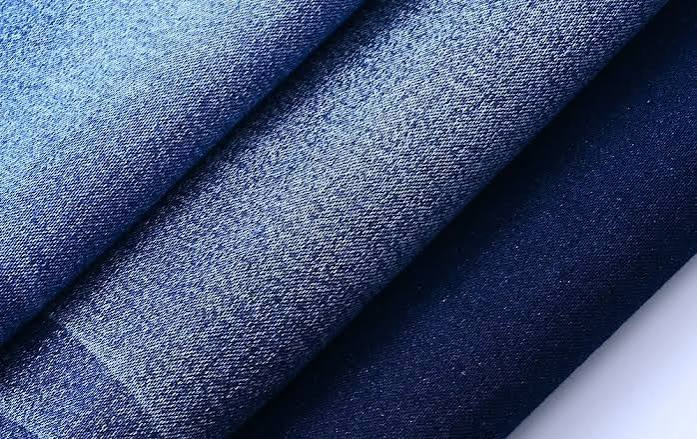
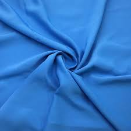
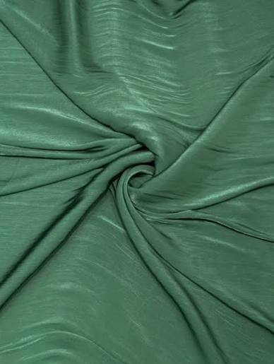

تعرف على خصائص كل نوع واستخداماته وبعض النصائح للعناية به.
قماش طبيعي ناعم ومريح، يستخدم في الملابس والمفروشات.
العناية به: اتبع تعليمات الغسيل وتجنب الحرارة المرتفعة دون حاجة.

قماش طبيعي يتميز بخفة ملمسه ويستخدم كثيراً في الملابس الصيفية.
العناية به: استخدم غسيلاً لطيفاً وكيّه وفق تعليمات المنتج.

قماش ناعم ولامع يستخدم في الملابس والفساتين الأنيقة.
العناية به: يفضل اتباع تعليمات العناية الخاصة بالحرير.

قماش متين يستخدم في صناعة البناطيل والسترات.
العناية به: اقلب الملابس قبل الغسيل واستخدم درجة حرارة مناسبة.

قماش طبيعي دافئ يستخدم في المعاطف والملابس الشتوية.
العناية به: اغسله بلطف وتجنب الحرارة العالية حتى لا ينكمش.

قماش خفيف وشفاف يستخدم في الفساتين والملابس النسائية.
العناية به: يفضل غسله بلطف وتجنب عصره بقوة.

قماش يتميز بسطح ناعم ولامع، ويستخدم في الفساتين والملابس الأنيقة.
العناية به: استخدم غسيلاً لطيفاً ودرجة حرارة منخفضة عند الكي حسب نوع الألياف.

قماش ذو سطح ناعم وملمس وبرّي، يستخدم في الملابس والمفروشات.
العناية به: تجنب فرك سطحه بقوة واتبع تعليمات التنظيف.

قماش يتميز بسطح ذي ملمس محبب، ويستخدم في الفساتين والملابس المختلفة.
العناية به: استخدم دورة غسيل مناسبة لنوع أليافه.

قماش مزخرف يحتوي على فتحات وتصميمات دقيقة، ويستخدم في الفساتين والزينة.
العناية به: اغسله برفق وتجنب شده أو تعريضه للاحتكاك.

قماش شبكي خفيف يستخدم في فساتين الزفاف والتنانير والزينة.
العناية به: تعامل معه برفق حتى لا يتمزق أو تتشابك خيوطه.

قماش خفيف وشفاف يتميز بقدر من التماسك، ويستخدم في الفساتين والزينة.
العناية به: تجنب الحرارة المرتفعة واتبِع تعليمات الغسيل.

قماش مصنوع من ألياف سليلوزية معالجة، يتميز بنعومته وانسداله الجيد.
العناية به: يفضل غسله بلطف وتجنب عصره بقوة، خاصة إذا كان مبللاً.